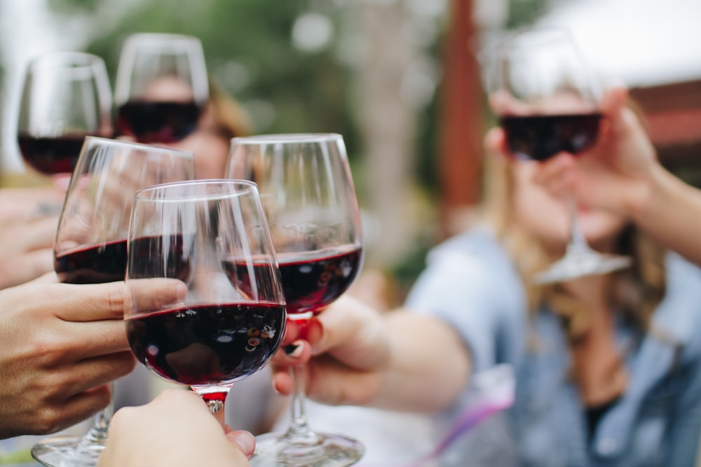

Tuscan Culinary Artistry in Uptown Charlotte
Handmade scratch pastas, slow-braised wild boar ragù, prime veal ossobuco, an exquisite Italian wine cellar, and dining beneath genuine Murano glass.
An Intimate Italian Escape in Truist Center Plaza
Tucked within the plaza of 214 N Tryon Street, Luce offers fine Italian hospitality, white tablecloth service, and authentic regional culinary heritage.
Timeless Flavors of Florence & Milan
Prepared with imported Italian flours, San Marzano tomatoes, Parmigiano-Reggiano, and prime heritage meats.
 Signature Primi
Signature Primi
Pappardelle al Cinghiale
$28.00Wide ribbon egg pasta hand-rolled in-house, tossed in a slow-braised wild boar ragù with juniper berries, Chianti red wine, and aged pecorino toscano.
View Pastas Secondi Piatti
Secondi Piatti
Ossobuco alla Milanese
$44.00Tender braised Dutch veal shank simmered in white wine and aromatic mirepoix, served with creamy saffron saffron risotto and fresh citrus gremolata.
Tasting Pairings
Sommelier CellarThe Italian Cellar
CuratedAn encyclopedic collection of premier Italian vintages spanning Tuscany, Piedmont, and the Veneto, alongside bespoke Negronis and herbal Amari.
Explore Wine List